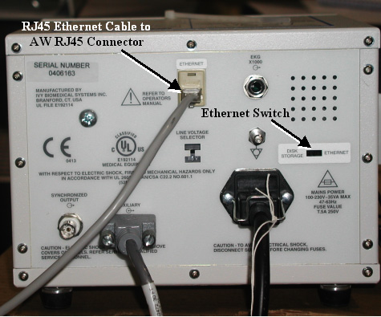

Home >
GEMS Proprietary Class: A
Direction 5134798-800, Rev# 1
Home > | GEMS Proprietary Class: A |
Install the Ethernet-based ECG monitor as described below:
At the back of the ECG Monitor, connect the long Ethernet RJ45 cable to the Ethernet jack as shown in Illustration 1.
Connect the other end of this ethernet cable to the “AW” (Advantage Workstation) RJ45 connector, located at the back of the GRE console near the a.c. power plug.
On the ECG Monitor, set the Ethernet Switch is switch to “Ethernet”.
Next, refer to Pathfinder ME-2 Upgrade Functional Checks.
Illustration 1: ECG Set-Up


|